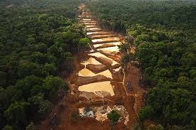

|
La fiebre del oro en Colombia:
Se extiende por toda américa del sur, en ninguna parte es más letal que en Colombia, es un nuevo eje de la guerra Las guerras territoriales están surgiendo entre los paramilitares y los grupos de izquierda rebelde que luchaba por tomar el control de las regiones mineras, ,miles de personas han huido de sus hogares por esta causa, además los que exportan
Ver mas |
|
| El coltan: Es un mineral muy valioso que se utiliza para crear los aparatos electrónicos que se utilizan hoy en día. Es un problema hoy en día, especialmente para las personas de el Congo que gracias a el han vivido unos tiempos de violencia explotación y una contaminación de sus zonas turísticas y rurales en su país que solo dejaran en un futuro no muy lejano un Congo lleno de cráteres (por las minas) que no querrá visitar nadie, otro de los problemas es que el coltan al ser tan toxico acaba con todas las otras formas de economía de el país las, mata los pescados, vuelve la tierra infértil y mata las plantas y animales.
Ver mas |
|
| Conflicto Armado y Explotacion de Oro En Colombia: La Minería en Colombia tiene varios problemas como en el medio ambiente y la economía donde hay varias explotaciones de minerales en las diferentes zonas del país.
En las minas de Antioquia en Colombia se han encontrado varias extracciones ilegales y una gran cantidad de explotación del oro, esto se ha convertido en una fuente de financiación del conflicto armado en Colombia. Esto se debe por el auge de los precios del oro las FARC y las bandas criminales (Los Paramilitares) utilizan ese dinero para financiar la guerra entre los Conflictos del estado y las bandas militares, estos grupos ilegales se están aprovechando de las ventajas que dejan estas fuentes de dinero.
Ver mas |
|
|  | La minería de oro ilegal: Es una manifestación criminal que no es nueva en el país pero en los últimos 10 años, se ha disparado, y viene causando daño irreparable y masivo daño a las selvas y los ríos.Este comportamiento literalmente se convirtió en una "Mina de oro", que nutre de dinero a las arcas de organizaciones criminales incluyendo grupos guerrilleros y bandas delincuentes, a lo largo y ancho de el país. En muchos municipios del país, cerca de el 70 por ciento de el territorio se han detectado varias actividades de minería ilícita, el 60 por ciento de ella es de oro.
Ver mas |